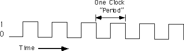
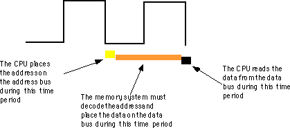
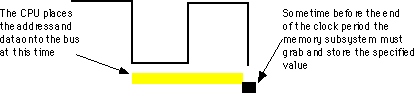
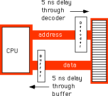
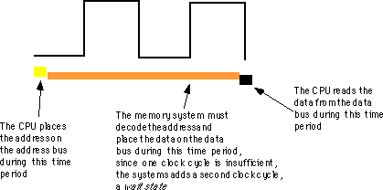
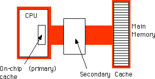

|
Table of Content | Chapter Three (Part 3) |
|
Table of Content | Chapter Three (Part 3) |
| CHAPTER THREE: SYSTEM ORGANIZATION (Part 2) |
| 3.2 - System
Timing 3.2.1 - The System Clock 3.2.2 - Memory Access and the System Clock 3.2.3 - Wait States 3.2.4 - Cache Memory |
| 3.2 System Timing |
Although modern computers are quite fast and getting faster
all the time, they still require a finite amount of time to accomplish even the smallest
tasks. On Von Neumann machines, like the 80x86, most operations are serialized.
This means that the computer executes commands in a prescribed order. It wouldn't do, for
example, to execute the statement I:=I*5+2; before I:=J; in the
following sequence:
I := J; I := I * 5 + 2;
Clearly we need some way to control which statement executes first and which executes second.
Of course, on real computer systems, operations do not
occur instantaneously. Moving a copy of J into I takes a certain
amount of time. Likewise, multiplying I by five and then adding two and
storing the result back into I takes time. As you might expect, the second
Pascal statement above takes quite a bit longer to execute than the first. For those
interested in writing fast software, a natural question to ask is, "How does the
processor execute statements, and how do we measure how long they take to execute?"
The CPU is a very complex piece of circuitry. Without going into too many details, let us just say that operations inside the CPU must be very carefully coordinated or the CPU will produce erroneous results. To ensure that all operations occur at just the right moment, the 80x86 CPUs use an alternating signal called the system clock.
At the most basic level, the system clock handles all synchronization within a computer system. The system clock is an electrical signal on the control bus which alternates between zero and one at a periodic rate:

CPUs are a good example of a complex synchronous logic system (see the previous chapter). The system clock gates many of the logic gates that make up the CPU allowing them to operate in a synchronized fashion.
The frequency with which the system clock alternates between zero and one is the system clock frequency. The time it takes for the system clock to switch from zero to one and back to zero is the clock period. One full period is also called a clock cycle. On most modern systems, the system clock switches between zero and one at rates exceeding several million times per second. The clock frequency is simply the number of clock cycles which occur each second. A typical 80486 chip runs at speeds of 66million cycles per second. "Hertz" (Hz) is the technical term meaning one cycle per second. Therefore, the aforementioned 80486 chip runs at 66 million hertz, or 66 megahertz (MHz). Typical frequencies for 80x86 parts range from 5 MHz up to 200 MHz and beyond. Note that one clock period (the amount of time for one complete clock cycle) is the reciprocal of the clock frequency. For example, a 1 MHz clock would have a clock period of one microsecond (1/1,000,000th of a second). Likewise, a 10 MHz clock would have a clock period of 100 nanoseconds (100 billionths of a second). A CPU running at 50 MHz would have a clock period of 20 nanoseconds. Note that we usually express clock periods in millionths or billionths of a second.
To ensure synchronization, most CPUs start an operation on either the falling edge (when the clock goes from one to zero) or the rising edge (when the clock goes from zero to one). The system clock spends most of its time at either zero or one and very little time switching between the two. Therefore clock edge is the perfect synchronization point.
Since all CPU operations are synchronized around the clock, the CPU cannot perform tasks any faster than the clock. However, just because a CPU is running at some clock frequency doesn't mean that it is executing that many operations each second. Many operations take multiple clock cycles to complete so the CPU often performs operations at a significantly lower rate.
3.2.2 Memory Access and the System Clock
Memory access is probably the most common CPU activity. Memory access is definitely an operation synchronized around the system clock. That is, reading a value from memory or writing a value to memory occurs no more often than once every clock cycle. Indeed, on many 80x86 processors, it takes several clock cycles to access a memory location. The memory access time is the number of clock cycles the system requires to access a memory location; this is an important value since longer memory access times result in lower performance.
Different 80x86 processors have different memory access times ranging from one to four clock cycles. For example, the 8088 and 8086 CPUs require four clock cycles to access memory; the 80486 requires only one. Therefore, the 80486 will execute programs which access memory faster than an 8086, even when running at the same clock frequency.
Memory access time is the amount of time between a memory operation request (read or write) and the time the memory operation completes. On a 5 MHz 8088/8086 CPU the memory access time is roughly 800 ns (nanoseconds). On a 50 MHz 80486, the memory access time is slightly less than 20 ns. Note that the memory access time for the 80486 is 40 times faster than the 8088/8086. This is because the 80486's clock frequency is ten times faster and it uses one-fourth the clock cycles to access memory.
When reading from memory, the memory access time is the amount of time from the point that the CPU places an address on the address bus and the CPU takes the data off the data bus. On an 80486 CPU with a one cycle memory access time, a read looks something like shown below:

Writing data to memory is similar to:

Note that the CPU doesn't wait for memory. The access time is specified by the clock frequency. If the memory subsystem doesn't work fast enough, the CPU will read garbage data on a memory read operation and will not properly store the data on a memory write operation. This will surely cause the system to fail.
Memory devices have various ratings, but the two major ones are capacity and speed (access time). Typical dynamic RAM (random access memory) devices have capacities of four (or more) megabytes and speeds of 50-100 ns. You can buy bigger or faster devices, but they are much more expensive. A typical 33 MHz 80486 system uses 70 ns memory devices.
Wait just a second here! At 33 MHz the clock period is roughly 33 ns. How can a system designer get away with using 70 ns memory? The answer is wait states.
A wait state is nothing more than an extra clock cycle to give some device time to complete an operation. For example, a 50 MHz 80486 system has a 20 ns clock period. This implies that you need 20 ns memory. In fact, the situation is worse than this. In most computer systems there is additional circuitry between the CPU and memory: decoding and buffering logic. This additional circuitry introduces additional delays into the system:

In this diagram, the system loses 10ns to buffering and decoding. So if the CPU needs the data back in 20 ns, the memory must respond in less than 10 ns.
You can actually buy 10ns memory. However, it is very expensive, bulky, consumes a lot of power, and generates a lot of heat. These are bad attributes. Supercomputers use this type of memory. However, supercomputers also cost millions of dollars, take up entire rooms, require special cooling, and have giant power supplies. Not the kind of stuff you want sitting on your desk.
If cost-effective memory won't work with a fast processor, how do companies manage to sell fast PCs? One part of the answer is the wait state. For example, if you have a 20 MHz processor with a memory cycle time of 50 ns and you lose 10 ns to buffering and decoding, you'll need 40 ns memory. What if you can only afford 80 ns memory in a 20 MHz system? Adding a wait state to extend the memory cycle to 100 ns (two clock cycles) will solve this problem. Subtracting 10ns for the decoding and buffering leaves 90 ns. Therefore, 80 ns memory will respond well before the CPU requires the data.
Almost every general purpose CPU in existence provides a signal on the control bus to allow the insertion of wait states. Generally, the decoding circuitry asserts this line to delay one additional clock period, if necessary. This gives the memory sufficient access time, and the system works properly

Sometimes a single wait state is not sufficient. Consider the 80486 running at 50 MHz. The normal memory cycle time is less than 20 ns. Therefore, less than 10 ns are available after subtracting decoding and buffering time. If you are using 60 ns memory in the system, adding a single wait state will not do the trick. Each wait state gives you 20 ns, so with a single wait state you would need 30 ns memory. To work with 60 ns memory you would need to add three wait states (zero wait states = 10 ns, one wait state = 30 ns, two wait states = 50 ns, and three wait states = 70 ns).
Needless to say, from the system performance point of view, wait states are not a good thing. While the CPU is waiting for data from memory it cannot operate on that data. Adding a single wait state to a memory cycle on an 80486 CPU doubles the amount of time required to access the data. This, in turn, halves the speed of the memory access. Running with a wait state on every memory access is almost like cutting the processor clock frequency in half. You're going to get a lot less work done in the same amount of time.
You've probably seen the ads. "80386DX, 33 MHz, 8 megabytes 0 wait state RAM... only $1,000!" If you look closely at the specs you'll notice that the manufacturer is using 80 ns memory. How can they build systems which run at 33 MHz and have zero wait states? Easy. They lie.
There is no way an 80386 can run at 33 MHz, executing an arbitrary program, without ever inserting a wait state. It is flat out impossible. However, it is quite possible to design a memory subsystem which under certain, special, circumstances manages to operate without wait states part of the time. Most marketing types figure if their system ever operates at zero wait states, they can make that claim in their literature. Indeed, most marketing types have no idea what a wait state is other than it's bad and having zero wait states is something to brag about.
However, we're not doomed to slow execution because of added wait states. There are several tricks hardware designers can play to achieve zero wait states most of the time. The most common of these is the use of cache (pronounced "cash") memory.
If you look at a typical program (as many researchers have), you'll discover that it tends to access the same memory locations repeatedly. Furthermore, you also discover that a program often accesses adjacent memory locations. The technical names given to this phenomenon are temporal locality of reference and spatial locality of reference. When exhibiting spatial locality, a program accesses neighboring memory locations. When displaying temporal locality of reference a program repeatedly accesses the same memory location during a short time period. Both forms of locality occur in the following Pascal code segment:
for i := 0 to 10 do A [i] := 0;
There are two occurrences each of spatial and temporal locality of reference within this loop. Let's consider the obvious ones first.
In the Pascal code above, the program references the
variable i several times. The for loop compares i
against 10 to see if the loop is complete. It also increments i by one at the
bottom of the loop. The assignment statement also uses i as an array index.
This shows temporal locality of reference in action since the CPU accesses i
at three points in a short time period.
This program also exhibits spatial locality of reference.
The loop itself zeros out the elements of array A by writing a zero to the
first location in A, then to the second location in A, and so
on. Assuming that Pascal stores the elements of A into consecutive memory
locations, each loop iteration accesses adjacent memory locations.
There is an additional example of temporal and spatial locality of reference in the Pascal example above, although it is not so obvious. Computer instructions which tell the system to do the specified task also appear in memory. These instructions appear sequentially in memory - the spatial locality part. The computer also executes these instructions repeatedly, once for each loop iteration - the temporal locality part.
If you look at the execution profile of a typical program, you'd discover that the program typically executes less than half the statements. Generally, a typical program might only use 10-20% of the memory allotted to it. At any one given time, a one megabyte program might only access four to eight kilobytes of data and code. So if you paid an outrageous sum of money for expensive zero wait state RAM, you wouldn't be using most of it at any one given time! Wouldn't it be nice if you could buy a small amount of fast RAM and dynamically reassign its address(es) as the program executes?
This is exactly what cache memory does for you. Cache memory sits between the CPU and main memory. It is a small amount of very fast (zero wait state) memory. Unlike normal memory, the bytes appearing within a cache do not have fixed addresses. Instead, cache memory can reassign the address of a data object. This allows the system to keep recently accessed values in the cache. Addresses which the CPU has never accessed or hasn't accessed in some time remain in main (slow) memory. Since most memory accesses are to recently accessed variables (or to locations near a recently accessed location), the data generally appears in cache memory.
Cache memory is not perfect. Although a program may spend considerable time executing code in one place, eventually it will call a procedure or wander off to some section of code outside cache memory. In such an event the CPU has to go to main memory to fetch the data. Since main memory is slow, this will require the insertion of wait states.
A cache hit occurs whenever the CPU accesses memory and finds the data in the cache. In such a case the CPU can usually access data with zero wait states. A cache miss occurs if the CPU accesses memory and the data is not present in cache. Then the CPU has to read the data from main memory, incurring a performance loss. To take advantage of locality of reference, the CPU copies data into the cache whenever it accesses an address not present in the cache. Since it is likely the system will access that same location shortly, the system will save wait states by having that data in the cache.
As described above, cache memory handles the temporal aspects of memory access, but not the spatial aspects. Caching memory locations when you access them won't speed up the program if you constantly access consecutive locations (spatial locality of reference). To solve this problem, most caching systems read several consecutive bytes from memory when a cache miss occurs. The 80486, for example, reads 16 bytes at a shot upon a cache miss. If you read 16 bytes, why read them in blocks rather than as you need them? As it turns out, most memory chips available today have special modes which let you quickly access several consecutive memory locations on the chip. The cache exploits this capability to reduce the average number of wait states needed to access memory.
If you write a program that randomly accesses memory, using a cache might actually slow you down. Reading 16 bytes on each cache miss is expensive if you only access a few bytes in the corresponding cache line. Nonetheless, cache memory systems work quite well.
It should come as no surprise that the ratio of cache hits to misses increases with the size (in bytes) of the cache memory subsystem. The 80486 chip, for example, has 8,192 bytes of on-chip cache. Intel claims to get an 80-95% hit rate with this cache (meaning 80-95% of the time the CPU finds the data in the cache). This sounds very impressive. However, if you play around with the numbers a little bit, you'll discover it's not all that impressive. Suppose we pick the 80% figure. Then one out of every five memory accesses, on the average, will not be in the cache. If you have a 50 MHz processor and a 90 ns memory access time, four out of five memory accesses require only one clock cycle (since they are in the cache) and the fifth will require about 10 wait states. Altogether, the system will require 15 clock cycles to access five memory locations, or three clock cycles per access, on the average. That's equivalent to two wait states added to every memory access. Now do you believe that your machine runs at zero wait states?
There are a couple of ways to improve the situation. First, you can add more cache memory. This improves the cache hit ratio, reducing the number of wait states. For example, increasing the hit ratio from 80% to 90% lets you access 10 memory locations in 20 cycles. This reduces the average number of wait states per memory access to one wait state - a substantial improvement. Alas, you can't pull an 80486 chip apart and solder more cache onto the chip. However, the 80586/Pentium CPU has a significantly larger cache than the 80486 and operates with fewer wait states.
Another way to improve performance is to build a two-level caching system. Many 80486 systems work in this fashion. The first level is the on-chip 8,192 byte cache. The next level, between the on-chip cache and main memory, is a secondary cache built on the computer system circuit board:

A typical secondary cache contains anywhere from 32,768 bytes to one megabyte of memory. Common sizes on PC subsystems are 65,536 and 262,144 bytes of cache.
You might ask, "Why bother with a two-level cache? Why not use a 262,144 byte cache to begin with?" Well, the secondary cache generally does not operate at zero wait states. The circuitry to support 262,144 bytes of 10 ns memory (20 ns total access time) would be very expensive. So most system designers use slower memory which requires one or two wait states. This is still much faster than main memory. Combined with the on-chip cache, you can get better performance from the system.
Consider the previous example with an 80% hit ratio. If the secondary cache requires two cycles for each memory access and three cycles for the first access, then a cache miss on the on-chip cache will require a total of six clock cycles. All told, the average system performance will be two clocks per memory access. Quite a bit faster than the three required by the system without the secondary cache. Furthermore, the secondary cache can update its values in parallel with the CPU. So the number of cache misses (which affect CPU performance) goes way down.
You're probably thinking, "So far this all sounds interesting, but what does it have to do with programming?" Quite a bit, actually. By writing your program carefully to take advantage of the way the cache memory system works, you can improve your program's performance. By colocating variables you commonly use together in the same cache line, you can force the cache system to load these variables as a group, saving extra wait states on each access.
If you organize your program so that it tends to execute the same sequence of instructions repeatedly, it will have a high degree of temporal locality of reference and will, therefore, execute faster.
|
Table of Content | Chapter Three (Part 3) |
Chapter Three: System Organization
(Part 2)
26 SEP 1996